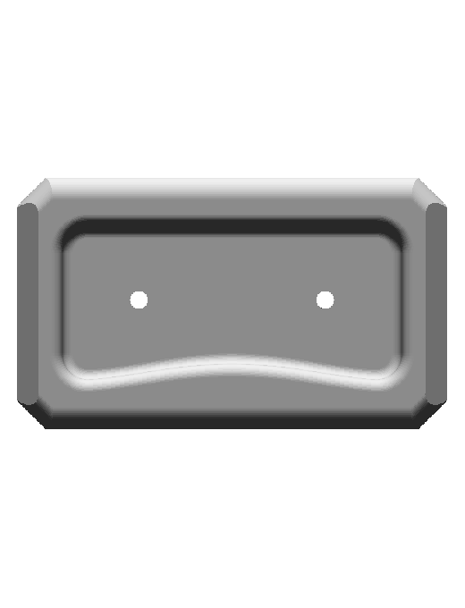
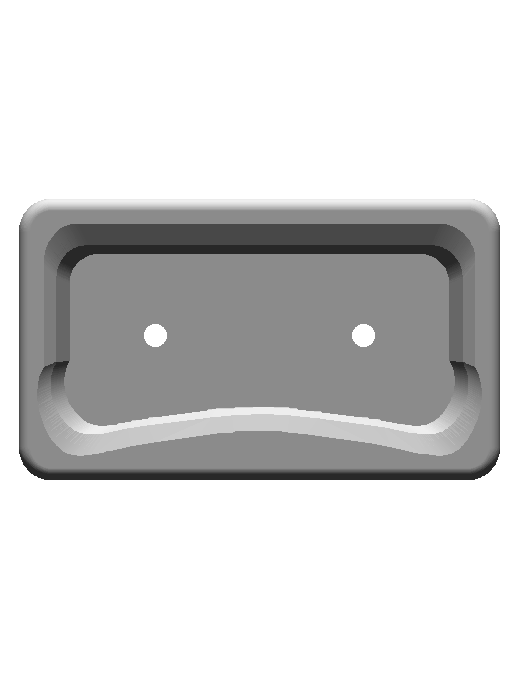
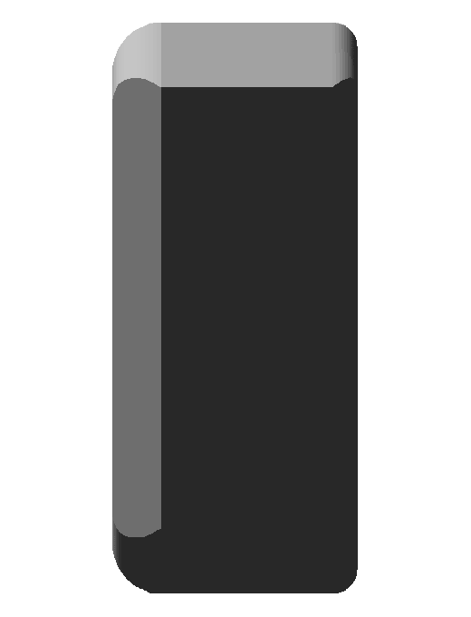
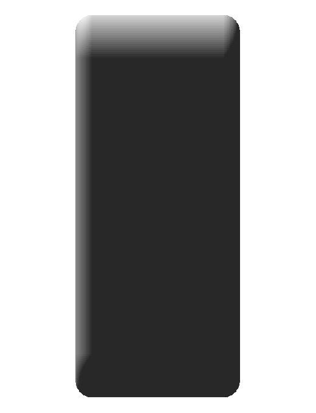

Native 120 × 70 × 30 mm rounded body, curved pocket walls, native mouth/end roundovers and two independent daylight bores. Four contact identities and factual metadata are retained.
Prior committed asset d0e4e95191e4a76822815bb4eeef3a32caa6fea0 and final native CAD, with corrected front/side/top viewing order. Native cord generation and subsequent --check pass. Human app review is separate.
| Prior committed asset | Native CAD |
|---|---|
front | front |
side | side |
top | top |
The final solid is CutRightFloorBore. The native pocket is 20 mm deep; its straight top and curved lower profile are deliberate analytic sketch geometry from the retained approved mesh section. Each bore has radius 3 mm and axis along native +Y, with X ±26 mm, Z 1 mm and Y 5..15 mm. Manufacturer P2 evidence supports the two open holes; no rear connection is inferred. The outer-jug region covers the full flat bearing surface (104 × 24 mm), expanding the previous partial selection without changing the physical body or grip metadata.